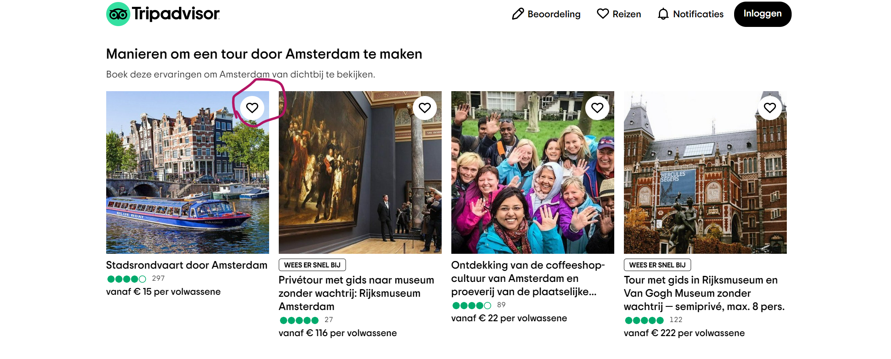
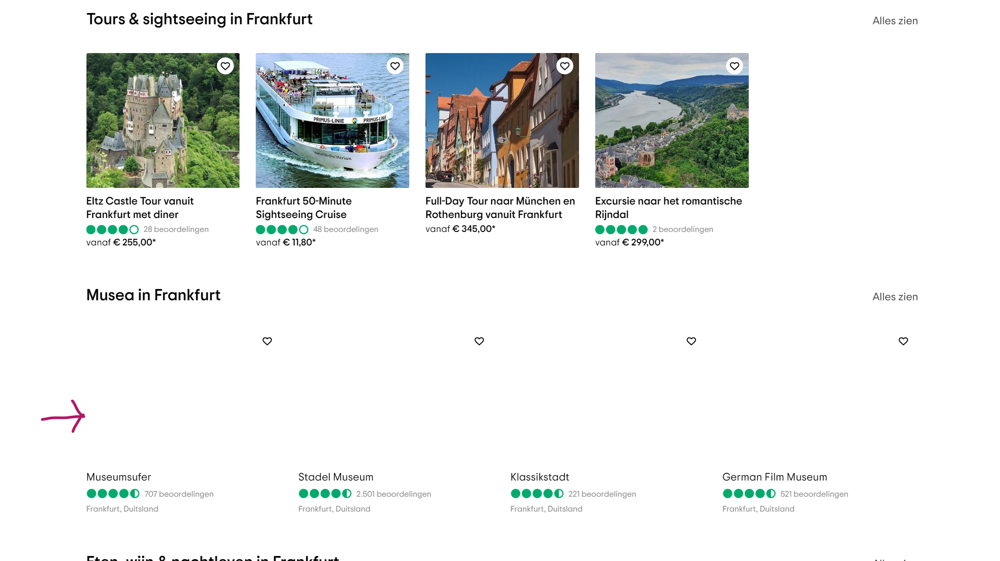
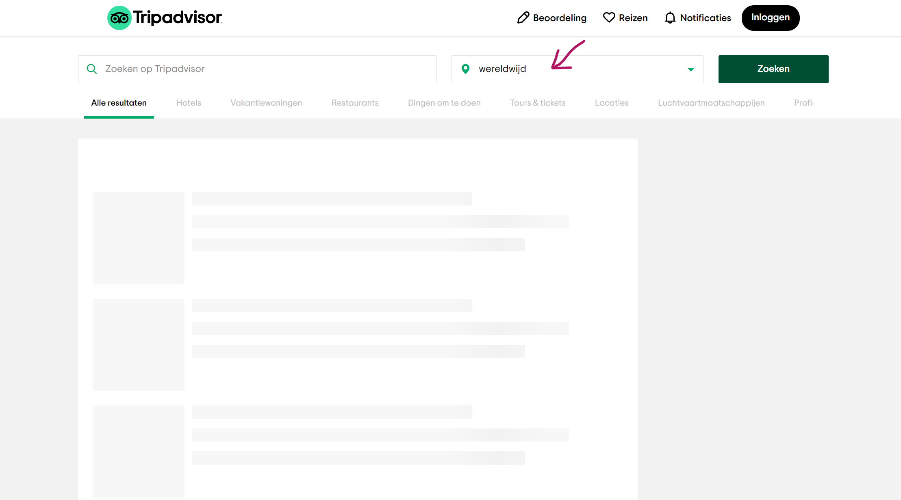
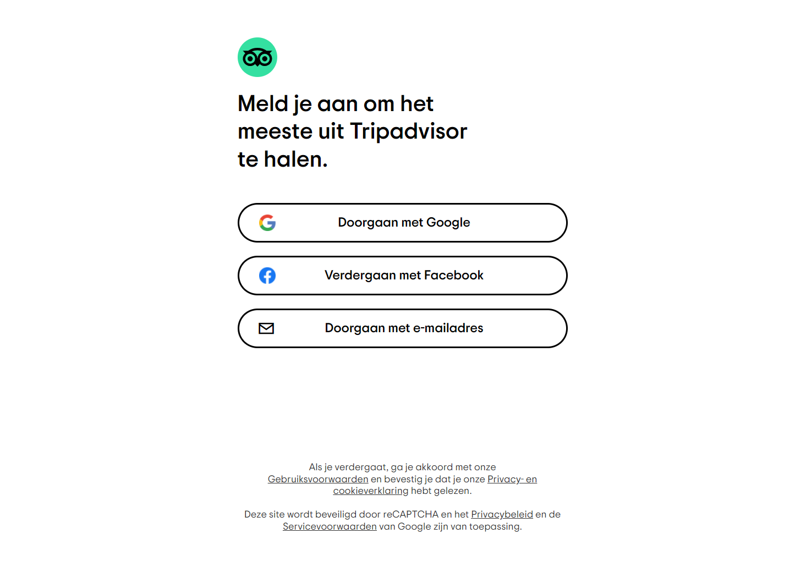
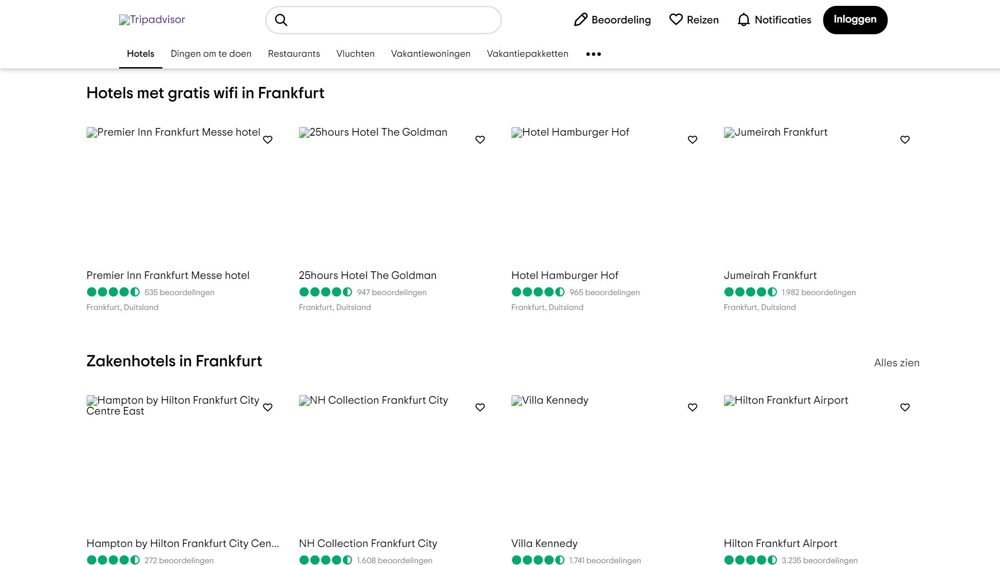
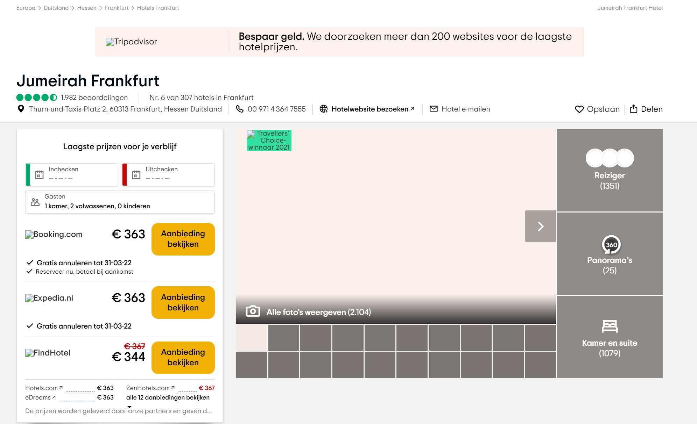

JavaScript uitzetten
Bevindingen
Om te kijken of de website van Tripadvisor nog naar behoren werkt als de JavaScript wordt uitgezet, heb ik een webdeveloper tool geinstalleerd die dit makkelijk kan doen.
Wat me direct opvalt is dat het niet meer mogelijk is om dingen als favoriet aan te vinken. Deze hele functionaliteit vervalt dus.
Wat verder opvalt is dat een deel van de afbeeldingen wel worden ingeladen en een deel weer niet.
Wat al helemaal mis gaat en ook niet meer bruikbaar is, is de zoekfunctie. Als je namelijk een zoekterm invult, word je naar een detailpagina geleid, maar worden de resultaten gewoon nooit ingeladen. Wat ook niet meer werkt, is het invoeren van de locatie, die ik met een pijl heb aangegeven.
Ook het registreren is helaas niet meer mogelijk.
Ook dit tablelletje om een datum aan te geven, wordt niet meer uitgeklapt en is dus niet meer bruikbaar.
Conclusie
Tripadvisor is een best wel fancy website die er goed uitziet en waarbij JavaScript wordt gebruikt voor mooie functionaliteiten. Het nadeel is dat veel key functionaliteiten afhangen van client side JavaScript. Waardoor de website niet meer bruikbaar is als de JavaScript uit staat.
Afbeeldingen uitzetten
Bevindingen
Om te kijken of de website van Tripadvisor nog naar behoren werkt als de afbeelidngen niet meer worden ingeladen, heb ik in de instellingen van Chrome ingesteld dat dit dus niet meer mogelijk is.
Wat me direct opvalt, is dat overal netjes een alt tekst staat.
Het is vrij belangrijk om afbeeldingen van accomodaties te kunnen zien. Verder dan dat werkt de website nog helemaal goed.
Conclusie
Het valt me op dat de website zonder afbeeldingen het nog heel goed doet. Er staan overal alt teksten en het lijkt erop dat er gewoon geen functionaliteiten afhangen van de afbeeldingen. Dit is dus iets wat ze goed hebben gedaan.